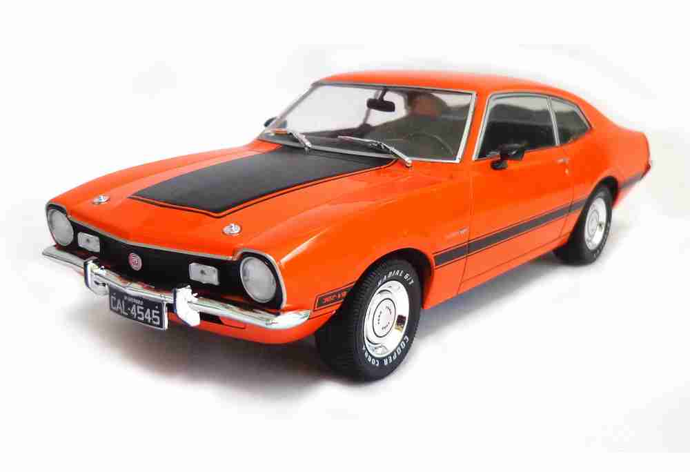

Fusca
O Fusca (no Brasil) ou Carocha (em Portugal) foi o primeiro modelo de automóvel fabricado pela companhia alemã Volkswagen. Foi o carro mais vendido no mundo, ultrapassando em 1972 o recorde que pertencia até então ao Ford Modelo T, de origem estadunidense. Foi produzido até 2003, no México, onde era chamado de VW Sedan. Ele era parte de uma edição comemorativa chamada Última Edición, limitada a 3.000 carros. O último exemplar marcou o fim da longa produção de 65 anos do Fusca, durante a qual foram fabricados 21.529.464 unidades, números que fazem dele o modelo único mais produzido do mundo em todos os tempos.
NO INÍCIO DEUS FEZ OS CEUS E A TERRA, ENTÃO FEZ O HOMEM, E O HOMEM FEZ O FUSCA!
Mustang
O Ford Mustang é um automóvel desportivo produzido pela Ford Motor Company. O carro foi apresentado ao público em 17 de abril de 1964 durante a New York World's Fair. O Mustang, apesar de ter sofrido grandes alterações ao longo dos anos é a mais antiga linha de automóveis da Ford. O nome "Mustang" é inspirado no avião de caça estadunidense P-51 Mustang, cujo nome se inspira na unica raça de cavalo selvagem do pais. Foi o primeiro "Muscle Car" da história, sendo seguido anos mais tarde por modelos concorrentes inspirados claramente nele.
Não é velho, é ANTIGO
Kombi
A Volkswagen Kombi é um automóvel utilitário que foi produzido pela empresa automotiva alemã Volkswagen, entre 1950 e 2013. Sua construção robusta monobloco (sem chassi), suspensão independente com barras de torção, além da excêntrica posição do motorista no carro (sentado sobre o eixo dianteiro e com a coluna de direção praticamente vertical), o tornam um veículo simples e robusto, de baixo custo de manutenção. Sua motorização é um caso a parte: embora os modelos recentes possuam motores mais modernos, durante 50 anos o motor que equipou o veículo no Brasil foi o tradicional "boxer" com refrigeração a ar, simples e muito resistente. Tal durabilidade geralmente superava em muito a do resto do carro, sendo comum nas ruas brasileiras ver carros totalmente destroçados, porém com o motor rodando perfeitamente. A despeito disso, a Kombi é um carro que, se usado dentro das especificações padrão, pode durar um longo período.No Brasil, foi fabricada ininterruptamente entre 2 de setembro de 1957 e 18 de dezembro de 2013, sendo praticamente o carro mais antigo do país. É considerada a precursora das vans de passageiros e carga.
É VELHO MAIS TA PAGO!
Este é um carro antigo que esta melhor que muito carro novo!!!
Maverick
O Maverick foi um automóvel criado pela Ford dos Estados Unidos que obteve grande sucesso. Também foi fabricado no Brasil entre 1973 e 1979 em versões exclusivas com motores 4,6 e 8 cilindros, onde foi lançado com enfoque comercial bem diferente do americano, e apesar de não ter obtido o mesmo sucesso de vendas, tornou-se lendário e hoje é cultuado por pessoas de várias idades.
CARRO ANTIGO É COMO MULHER DE AMIGO, VOCÊ OLHA, ADMIRA, ADMIRA, MAS NÃO PÕE A MÃO
Camaro
O Camaro é um coupé esportivo de porte médio da Chevrolet. Produzido desde 1966, trata-se de muscle car que seria a resposta da General Motors ao Ford Mustang, de 1964. Sua produção foi interrompida em 2002, mas a General Motors retomou a produção de uma nova versão em 2009.
Chevette
O Chevette foi um automóvel lançado pela General Motors no ano de 1973, sendo fabricado pela montadora Chevrolet no Brasil. É a 3 geração do Opel Kadett lançado na Europa em 1973. Foi introduzido inicialmente como um sedan duas portas mantendo como sua principal característica.